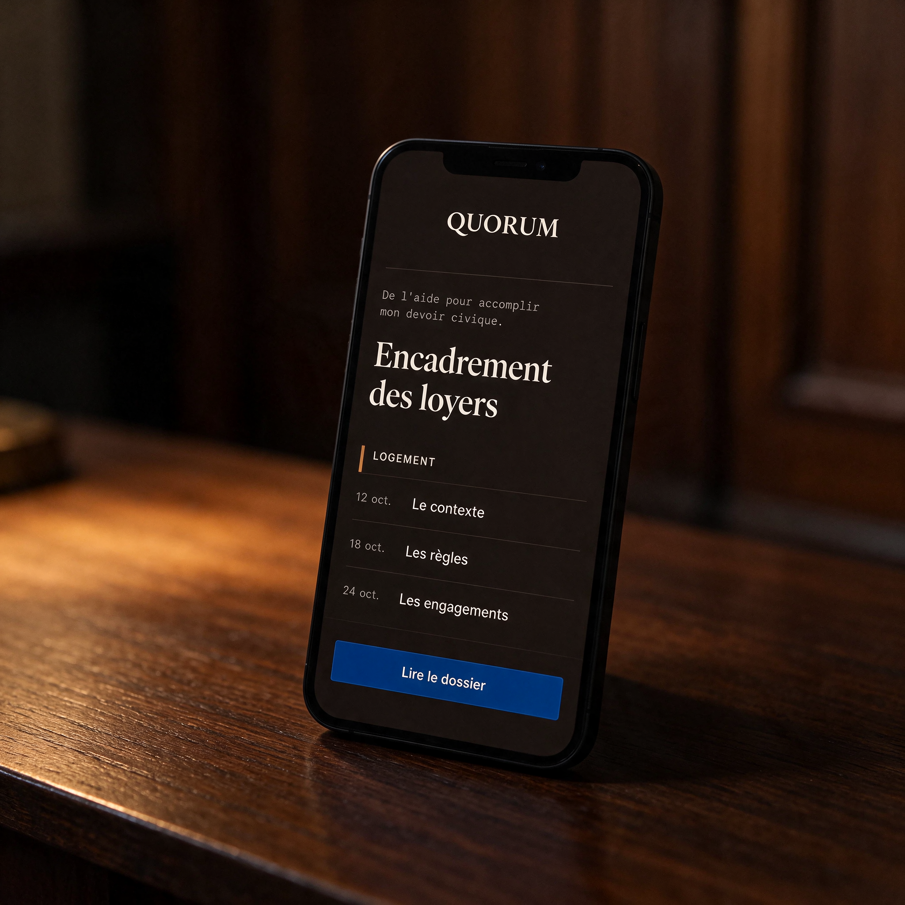
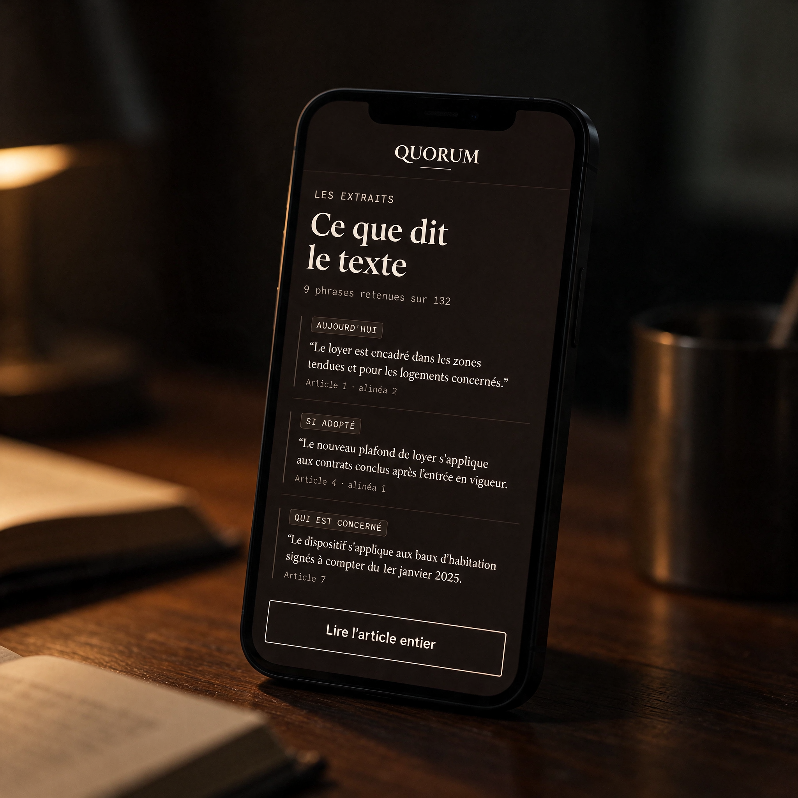
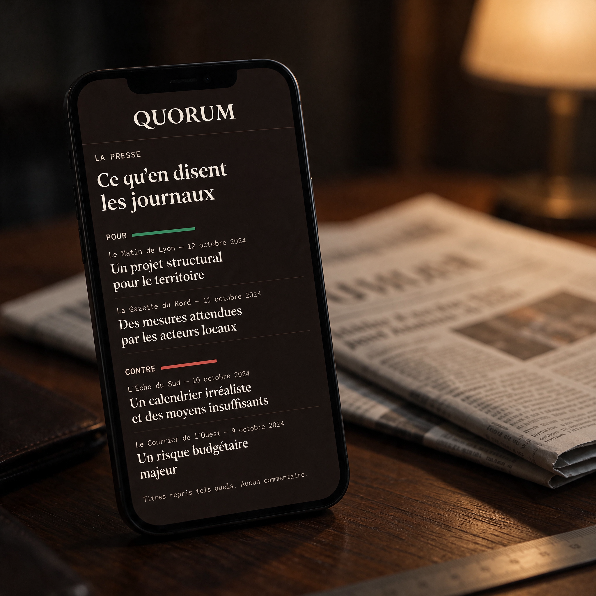
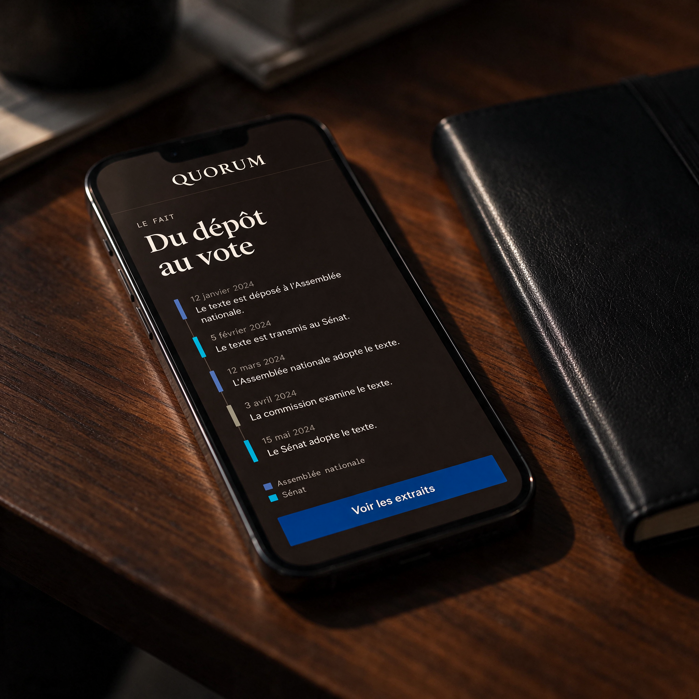
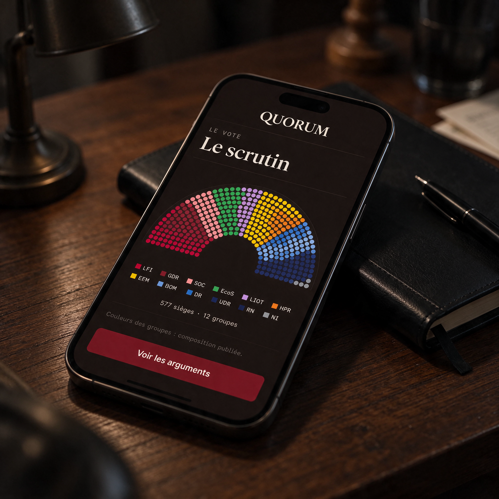
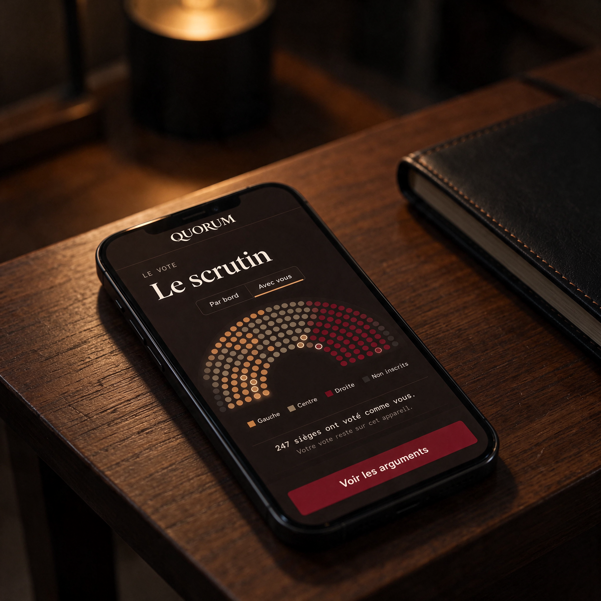
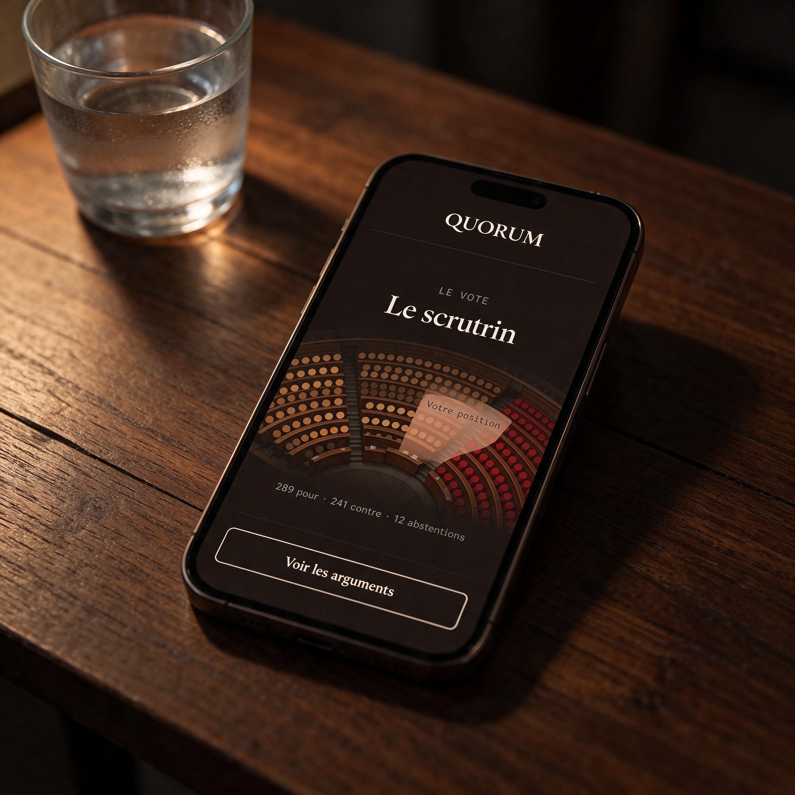
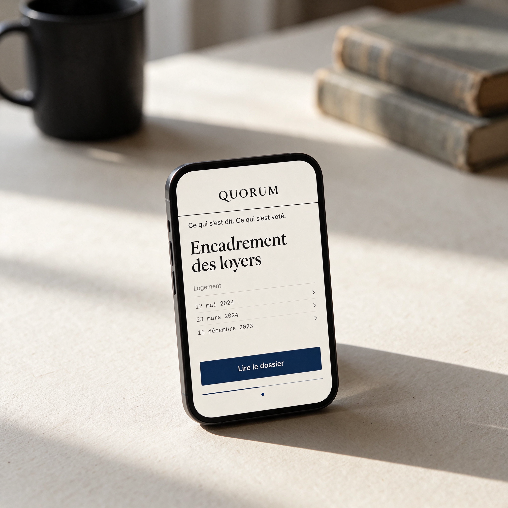

Rendus photo de la direction visuelle. Contenus inventés, à légender « maquette » dans les slides. La démonstration live utilise l'application réelle.








Toutes ces images sont des maquettes. Aucun chiffre, aucun titre, aucun nom affiché ici n'a valeur de donnée vérifiée.